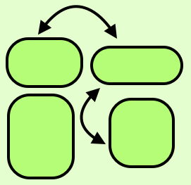

The Four-Level Nested Model Revisited: Blocks and Guidelines

CHI BELIV (2012) Workshop Paper
Authors
Miriah Meyer, Michael Sedlmair, Tamara Munzner
Materials
Abstract
We propose an extension to the four-level nested model of design and validation of visualization system that defines the term "guidelines" in terms of blocks at each level. Blocks are the outcomes of the design process at a specific level, and guidelines discuss relationships between these blocks. Within-level guidelines provide comparisons for blocks within the same level, while between-level guidelines provide mappings between adjacent levels of design. These guidelines help a designer choose which abstractions, techniques, and algorithms are reasonable to combine when building a visualization system. This definition of guideline allows analysis of how the validation efforts in different kinds of papers typically lead to different kinds of guidelines. Analysis through the lens of blocks and guidelines also led us to identify four major needs: a definition of the meaning of block at the problem level; mid-level task taxonomies to fill in the blocks at the abstraction level; refinement of the model itself at the abstraction level; and a more complete set of mappings up from the algorithm level to the technique level. These gaps in visualization knowledge present rich opportunities for future work.